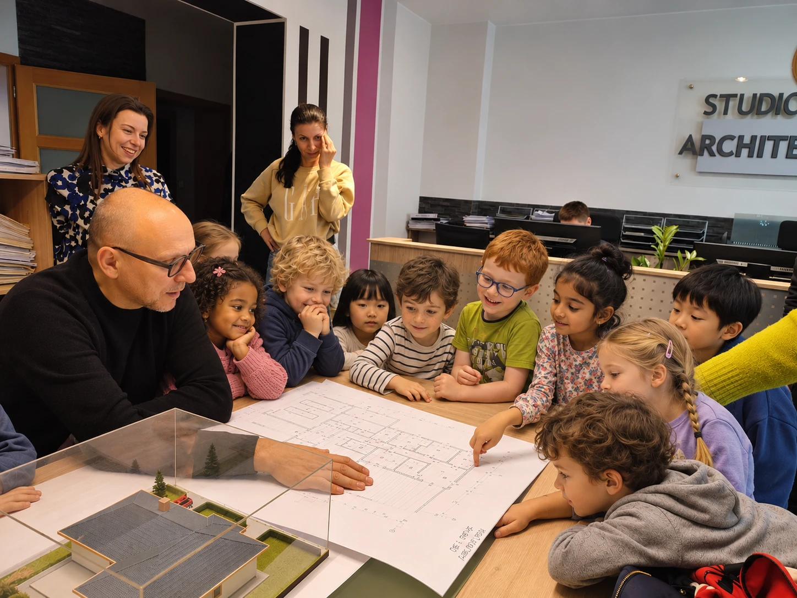

Każdy z nas pragnie zmian
Natalia Porada przedstawia projekt przebudowy elewacji budynku z lat 70. ubiegłego wieku.
Studio Architektury Piotr Ćwirko / ul. Prudnicka 5 / Krapkowice
Biblioteka miejska w Zdzieszowicach
Otwarta w grudniu 2025. Arch. Daria Dziadek, współpraca: Natalia Porada, razem z JW PROJEKT.
Bliźniaki dla DK INVEST
Dwa budynki, każdy z dwoma lokalami, projekt Darii Dziadek obok zespołu domów w zabudowie bliźniaczej. Lipiec 2024.
Bliźniaki dla DK INVEST
Dwa budynki, każdy z dwoma lokalami, projekt Darii Dziadek obok zespołu domów w zabudowie bliźniaczej. Lipiec 2024.
Budynek urzędu gminy
Architektura: Natalia Porada. Jasne wnętrza z zieloną ścianką w holu wykończyła praktykantka Oliwia Nowak. Marzec 2025.
Budynek z wyrazistą fasadą
Nowoczesna fasada i śmiała konstrukcja. Projekt powstał we współpracy z JW Projekt Jerzy Wójcik. Luty 2023.
Budynek użyteczności publicznej
Architektura i wnętrza: Natalia Porada. Konstrukcja: Alan Kocik. Prezentacja projektu w czerwcu 2026.
Bliźniaki dla DK INVEST
Dwa budynki, każdy z dwoma lokalami, projekt Darii Dziadek obok zespołu domów w zabudowie bliźniaczej. Lipiec 2024.
Dom jednorodzinny, rzuty i elewacje
Rysunki i wizualizacje wnętrz domu, maj 2024.
Dyplom przyznano Studiu na Targach Opolskich Dom Wnętrze Ogród. Wyróżniony budynek zaprojektowali mgr arch. Daria Dziadek, mgr arch. Natalia Porada i Bernard Spałek we współpracy z biurem JW PROJEKT Jerzy Wójcik z Krapkowic.
O nas
Małe biuro z Prudnickiej 5, które projektuje od domu jednorodzinnego po bibliotekę i remizę strażacką, a potem pilnuje, żeby budynek powstał tak, jak narysowano.
Pracujemy z inwestorami prywatnymi, deweloperami i samorządami. Lubimy proste, nowoczesne bryły, funkcjonalne układy pomieszczeń i szczegół, który odróżnia budynek od setnej kopii tego samego projektu. Z sentymentem patrzymy też na śląski modernizm międzywojenny i chętnie ratujemy stare obiekty zamiast je burzyć.

Czym się zajmujemy
Domy jednorodzinne, zespoły budynków mieszkalnych, obiekty użyteczności publicznej, budynki administracyjne i dobudowy do istniejących obiektów.
Przebudowa elewacji, wymiana stolarki w budynkach zabytkowych, zmiany funkcji obiektów i adaptacja projektów typowych do Twojej działki.
Sprzedaż gotowych projektów oraz ich dopasowanie do potrzeb inwestora i warunków działki.
Projekty i wizualizacje wnętrz, także w kilku wariantach wykończenia, żeby łatwiej było wybrać.
Kierowanie i nadzór nad robotami budowlanymi, od stanu zero po wykończenie elewacji.
Świadectwa energetyczne oraz kontrole stanu technicznego obiektów, także wielkopowierzchniowych: hal produkcyjnych i budynków biurowych.
Wybrane projekty
Co u nas słychać
Natalia Porada przedstawia projekt przebudowy elewacji budynku z lat 70. ubiegłego wieku.
Jednym lepiej jest razem, innym oddzielnie. Rozsunęliśmy budynki na działce i to chyba najlepsze rozwiązanie dla naszych klientów.
Architekturę i wnętrza zaprojektowała Natalia Porada, konstrukcję Alan Kocik.
Nowy projekt Natalii Porady, zaprezentowany jeszcze przed oficjalną premierą.
Nowy dom jednorodzinny Natalii Porady: bryła z garażem, taras nad nim i wnętrze z antresolą.
Dyplom dotarł pocztą po targach Dom Wnętrze Ogród w Opolu. Nagrodzony budynek zaprojektowali Daria Dziadek, Natalia Porada i Bernard Spałek razem z JW PROJEKT Jerzy Wójcik.
Praktykantki z opolskiej szkoły budowlanej pokazują wnętrza, które zaprojektowały do naszych budynków.
Kolejny obiekt użyteczności publicznej zaprojektowany razem z JW PROJEKT Jerzy Wójcik.
Architektka obroniła pracę dyplomową na ocenę 5 i dołączyła do grona polskich architektów.
Uroczystość połączona z Dniem Strażaka w Kędzierzynie-Koźlu. W nowej części jest myjnia, pomieszczenia techniczne, sanitarne i strefa spa.
Zabawa w projektowanie i wykańczanie wnętrz z dziećmi z Krapkowic. Goście odwiedzili nasze biuro, żeby zobaczyć, jak powstaje projekt.